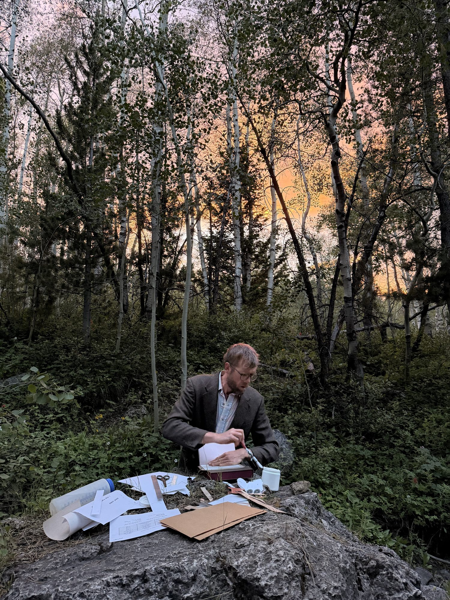
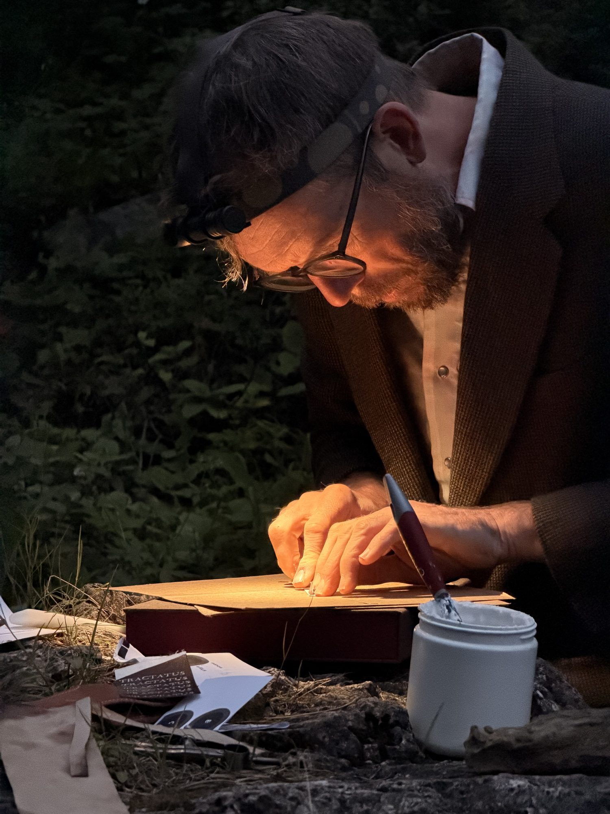
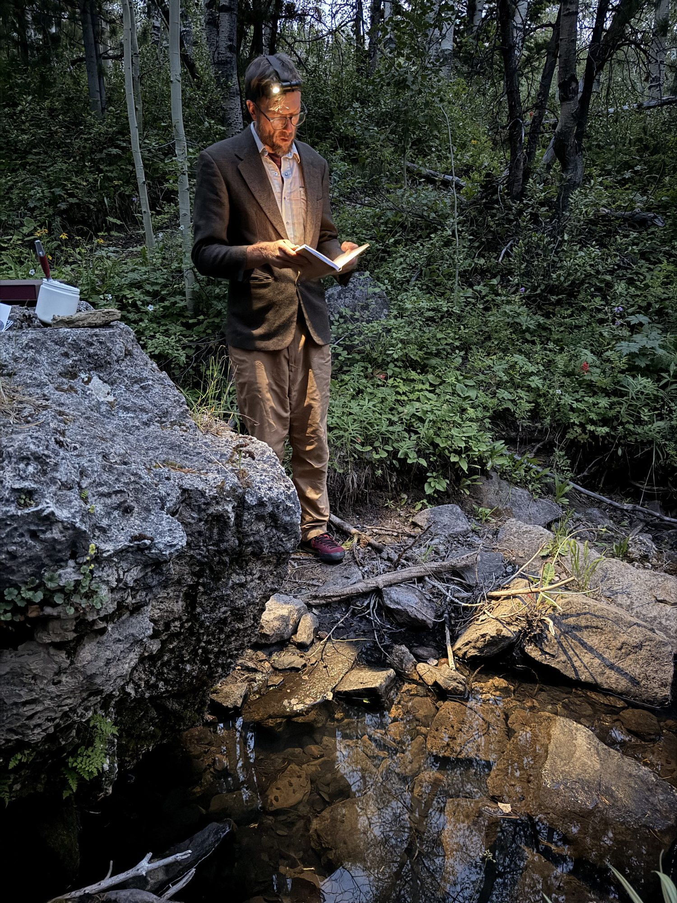

This season the studio has no walls. Through the summer Jeannie and I are working out of a vehicle across Wyoming, Montana, and Colorado — climbing and painting in the mornings, swimming the heat off at midday, documenting in the evenings, all of it running on a satellite signal and a battery. The question underneath it is simple and practical: can the whole operation be carried — made small enough, and durable enough, to keep making real, physical things from wherever the work happens to be?
It is one investigation under a single name, Survival Notes from the Near Future: a practical guide and a meditation on moving into a reality of computing and climate change without losing what makes us human. What comes back from the road will gather here, week by week, all summer long.
We need to rethink the way technologies are integrated into our existence — and embrace them for the realization of our goals.
survival notes · 2026The 200. Two hundred small watercolors — half mine, half Jeannie's — painted in the field and each one unique. The first iteration of a larger idea, made entirely on the move. They go up for sale beginning at the summer solstice.
Two books, bound in the forest. First editions in the Sewn Boards structure: Wittgenstein's Tractatus Logico-Philosophicus, chosen for what it says about the limits of language in the age of the language model, and Whitman's Leaves of Grass, which Whitman set by hand. Austere limit against catalogue-everything abundance — the conceptual engine of the whole summer.

The bindery loses its walls too
The Tractatus was sewn and cased by headlamp in a creek bottom below the Wild Iris crags, outside Lander, Wyoming — glue pot, awl, thread and boards laid out on a boulder while the light went. A book about the limits of language, finished at the exact hour the light runs out.



Magic is the transportation of millions of gallons of water over thousands of miles in the rivers of the atmosphere. Each molecule of water drifts aimlessly on a cyclical pilgrimage to the tops of the mounts only to erode their way back to the melting pot of the oceans. And then again upwards over the mountain.